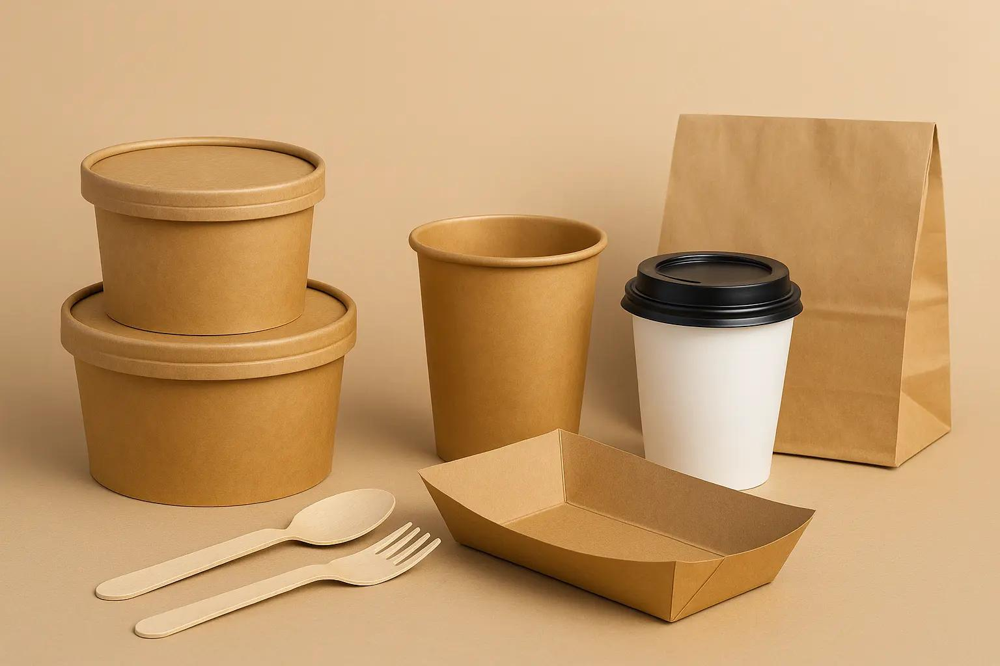

EcoPack utilizează materii prime ecologice, selectate atent pentru a reduce impactul asupra mediului. Acestea includ hârtie reciclată, carton biodegradabil și materiale naturale provenite din surse sustenabile.
Procesul de selecție implică verificarea calității, rezistenței și reciclabilității materialelor. Se evită utilizarea plasticului și a substanțelor toxice.

Materialele utilizate sunt prietenoase cu mediul și contribuie la reducerea poluării. Prin alegerea acestor materii prime, EcoPack promovează un stil de viață sustenabil.
Înapoi